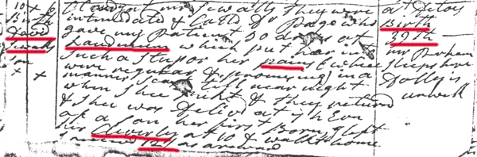

| 10 X. 6
Birth David Sewalls Son. X X. |
Cloudy. at mr Sewalls, they were intimidated & Calld Dr Page who gave my Patient [50] drops ot Laudenum which put her into Such a Stupor her pains (which were regular & promising) in a manner [Scant] till near night when Shee pukt & they returned & Shee was Delivd at 7h Evn of a Son, her first Born. I left her Cleverly at 10 & walkt home. I receivd 12/ as a reward. | at Ditoes.
Birth 39th. mr Perham Sleeps here. Dolly is unwell. |